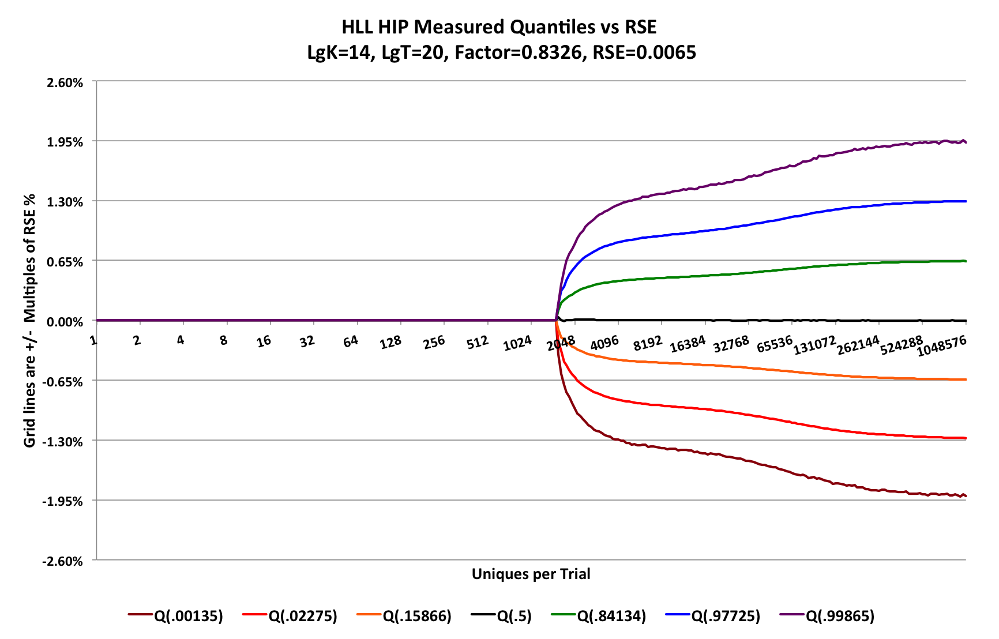

The goal is to produce an accuracy plot like this:

The x-axis is logarithmic in base 2 and defines the accuracy characterization range of n for the sketch. The range of the above plot consists of 20 powers of 2 or 20 octaves. For good plot visualization, we want the actual plotted points to be evenly spaced and close enough so that there are no visual jagged edges in the curves, but no closer.
For this plot I chose Plot Points per Octave (PPO) of 16. We generate an exponential series of integers corresponding to the desired plot points. In theory, this would produce 320 (20 x 16) plot points. However, there are obviously not 16 integers between the low powers of 2 on the left so I created a simple function to generate the power series that adjusts for this:
import static java.lang.Math.*;
import org.testng.annotations.Test;
public class CreatePowerSeries {
static double log2(double x) { return log(x)/log(2); }
public static long pwr2SeriesNext(final int ppo, final long curPoint) {
final long cur = curPoint < 1L ? 1L : curPoint;
int gi = (int)round(log2(cur) * ppo); //current generating index
long next;
do {
next = Math.round(pow(2.0, (double) ++gi / ppo));
} while ( next <= curPoint);
return next;
}
static long maxPt = 1L << 10; //for the power series 1 ... 1024
static long minPt = 1L;
static int ppo = 4; //adjust as needed
@Test
public void printSeries() {
for (long p = minPt; p <= maxPt; p = pwr2SeriesNext(ppo, p)) {
System.out.print(p + " ");
}
System.out.println();
}
}
To keep the output small for this document I set $maxPt = 2^{10}$ and $ppo = 4$. The result series is
1 2 3 4 5 6 7 8 10 11 13 16 19 23 27 32 38 45 54 64 76 91 108 128 152 181 215 256 304 362 431 512 609 724 861 1024
The HLL sketch was configured with $lgK = 14$
The Y-axis of the above plot has the grid intervals at multiples of the inherent Relative Standard Error (RSE) of the sketch, computed as $RSE=.8326/sqrt(2^{lgK})= 0.0065$. Therefore the grid lines above and below the X-axis represent +/- # of standard deviations. As you can see in the plot the sketch accuracy is asymtotic to +/- 2 standard deviations from the mean or +/- 1.3% with 95.4% confidence. Or, equivalently, +/- 3 standard deviations from the mean or +/- 1.95% with a 99.73% confidence.
At each Plot Point I configure a high accuracy Quantile Sketch with a $lgK=12$. Each point also has an associated value, $v$ from the Plot Point Series indicating its true value. Each PP also records cumulative statistics for each estimate value computed for that PP.
Let q[i] be the index of a PP in the PP array.
Let q[i].v be the true-value of that plot point.
A single trial consists of these steps:
The number of trials can be in the millions, It is important to understand that scanning across the plot-points and incrementing the sketches with deltas is critical for performing the characterization test in minimum time. If $T$ is the number of trials and $n=2^{20}$, the number of updates to the sketch is $Tn$. If $T=1M$ and $n=1M$ the number of sketch updates is ~1B.
If, however, you create a new sketch at each PP and update the sketch with $q[i].v$ at each PP, you would end up with $T(n^{2} + n)$ sketch updates. Running a test with a million trials and $n=1M$, would be ~1T updates!
At the end of running all the trials the quantile statistics are collected from all the quantile sketches and the plots are generated.
The major code for this test can be found in these files:
Lee Rhodes
9 Jul 2026